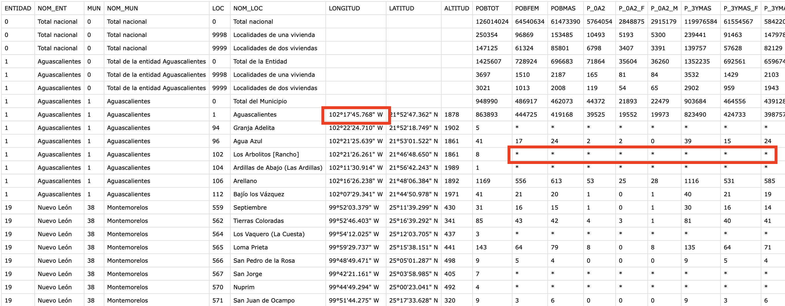

INEGI es un organismo público autónomo responsable de normar y coordinar el Sistema Nacional de Información Estadística y Geográfica Inegi, así como de captar y difundir información de México en cuanto al territorio, los recursos, la población y economía, que permita dar a conocer las características del país y ayudar a la toma de decisiones, publican el Sistema de consulta del cual se pueden tomar set de datos públicos.
Base de datos (lista):
Qué aprenderás
- Data Engineering
- Data load desde equipo local hacia nube Snowflake usando Python
- Data Visualization con Streamlit y Snowpark
Qué necesitas
- Cuenta Snowflake o Cuenta Snowflake trial
- Acceso a GitHub
- VSCode con Jupyter Notebook
- Python (Python 3.8)
- Anaconda
- Snowpark Python
- Streamlit
Problema
- Datos en un almacenamiento server, los datos no están con el formato correcto para ciencia o visualización de datos así como NULL (*) en algunas columnas. 
Qué construirás
- Web App con Streamlit realizando data engineering: carga y transformación en base a tipos de datos( latitud/longitud) para realizar una programación End-2-End con Python.

Arquitectura de Solución

Código fuente
Descargar el repositorio que contiene el código necesario [github repo](https://github.com/sfc-gh-csuarez/snowpark_inegi.git)
git clone https://github.com/sfc-gh-csuarez/snowpark_inegi.git
Después de la descarga ingresar a la carpeta snowpark_inegi-main y abrir con Visual Studio Code o el editor de preferencia que soporte archivos Jupyter Notebook
Creación de ambiente de desarrollo Python
Crear un ambiente local de desarrollo para la instalación de algunas librerías así como de Snowpark con la versión Python 3.8 Teniendo Anaconda instalado, con la aplicacicón terminal apuntar a la carpeta donde de descargo el clon de Github, para crear un ambiente de desarrollo ejecutar:
conda create --name snowpark_env python=3.8
conda activate snowpark_env
Instalación Snowpark Python
Instalación de Snowpark
pip install snowflake-snowpark-python pandas
pip install lat-lon-parser
pip install requests
conda install -c conda-forge streamlit
conda install -c conda-forge pillow
Configuración en Snowflake UI
Ingresar con el usuario/contraseña a Snowflake, crear un Worksheet y ejecutar el siguiente código SQL para crear base de datos (INEGI), crear virtual warehouse (INEGI_WH) rol (INEGI_ROLE) y asignar los privilegios correspondientes:
use role accountadmin;
--objetos
create database inegi;
--wharehouse
create warehouse inegi_wh
warehouse_type = 'STANDARD'
warehouse_size =XSMALL
auto_suspend = 120
auto_resume = TRUE
max_cluster_count=1
min_cluster_count=1;
--rol
create role inegi_role;
grant role inegi_role to user <tu_usuario_snowflake>;
grant role sysadmin to user <tu_usuario_snowflake>;
grant role sysadmin to role inegi_role;
--privilegios
grant usage on database inegi to role inegi_role;
grant all privileges on schema public to role inegi_role;
grant usage on warehouse inegi_wh to role inegi_role;
A partir de este punto y en adelante se usará el rol "inegi_role"
Configuración config.py
En la URL Snowflake https://<id_cuenta>.<zona_region_cuenta>.snowflakecomputing.com ejemplo: https://ly14496.south-central-us.azure.snowflakecomputing.com los valores correspondientes son:
id_cuenta = ly14496
zona_region_cuenta = south-central-us.azure
En este archivo config.py ingresar los valores para cada propiedad con la información para acceder a Snowflake desde Python usando Snowpark.
connection_parameters = {
"account": "<id_cuenta>.<zona_region_cuenta>",
"user": "<tu_usuario_snowflake>",
"password": "<tu_contraseñan_snowflake>",
"warehouse": "INEGI_WH",
"role": "INEGI_ROLE",
"database": "INEGI",
"schema": "PUBLIC"
}
Detalle en repositorio github repo
Descargar archivos desde web hosting
Dentro del directorio descargado desde Github, abrir Visual Studio Code (VSC) y activar virtual environment snowpark_env creado en la instalación
conda activate snowpark_env
Abir el archivo 01_INEGI_download.ipynb y ejecutar el cell
#Script para ejección de descarga de archivo y realizar transformaciones (Split a JSON)
from inegidata import urlDownload
# opción 'remote' para descarga desde webhost de INEGI
# opciób 'local' para descompresión desde repo local
urlDownload('remote')
Puede elegir como parámetro de la función urlDownload tanto remote como local
- opción ‘remote' para descarga desde webhost de INEGI
- opción ‘local' para descompresión desde repo local
Teniendo la conexión a internet activa, iniciará el proceso de descarga de archivo colocando dentro de la carpeta CSV la estructura de directorios origen, y create el archivo inegi.csv y dentro del directorio JSON los archivos particionados json y en compresión json.gz

Dentro del directorio descargado desde Github, abrir Visual Studio Code (VSC) y activar virtual environment snowpark_env creado en la instalación
conda activate snowpark_env
Abrir el archivo 02_INEGI_dataEngineering.ipynb y ejecutar los dos primeros cells para cargar las librerías necesarias y activar la sesión a Snowflake. 
Ejecutar el cell #Activación para crear los objetos y privilegios Snowflake 
Ejecutar el cell #Crear internal Stage para la carga de datos JSON ya curados 
Ejecutar el cell #Transformando a objeto Snowflake para la colocación de datos en el objeto Snowflake tabla 
Abrir el archivo 03_INEGI_dataModeling.ipynb y ejecutar los dos primeros cells para cargar las librerías necesarias y activar la sesión a Snowflake. 
Ejecutar el cell #Crear vista para crear la vista que tendrá los datos que incluyen transformación de datos JSON en tabla INEGI_RAW
Ejecutar el cell #UDF declaración para incorporar la función creada en python nom_entidad que servirá para convertir No. de entidad por nombre de entidad. 
Ejecutar el cell #Vista con totales por entidad aplicando para materializar datos aplicando UDF y que tendrá los totales máximos de población para cada entidad 
Ejecutar el cell #Validar la vista solo con totales por entidad para validar el contenido de la vista creada 
Creación de sesión utilizando los constructores de Snowpark y los valores de acceso a Snowflake en el archivo 04_Streamlit.py y ejecutar en terminal de Visual Studio Code
conda activate snowpark_env
streamlit run 04_Streamlit.py
@st.experimental_singleton
def snowsesion() -> Session:
sesion = Session.builder.configs(connection_parameters).create()
if sesion != None:
print("Conectado")
sesion.use_database('inegi')
print(sesion.sql("select current_warehouse(), current_database(), current_role()").collect())
return sesion
else:
print("Error de conexión")
def run_query(sesion,query):
try:
return sesion.sql(query)
except :
print("error: ")
Streamlit permite la visualización de datos programando en Python pero usando "variables" como controles de datos, iniciando por la configuración de la página de mostrará elementos visuales:
st.set_page_config(
page_title="INEGI App",
page_icon="☻",
layout="wide",
initial_sidebar_state="expanded",)
st.header("Censo y población México")
Podemos crear un slider para hacer interactivo, cada vez que se modifique su valor otros componentes actualizarán su contenido.
image = Image.open('img/inegi.png')
st.image(image, caption='INEGI',width=220)
add_n_hab = st.slider("Elige volumen de problación (# habitantes):", 700000, 17000000,2125000 ,500000)
query = "SELECT * FROM INEGI.PUBLIC.INEGI_MAPA where POBLACION_TOTAL > " + str(add_n_hab) + " order by POBLACION_TOTAL desc;"
sesion = snowsesion()
snowDF = run_query(sesion,query)
snowPD = snowDF.to_pandas()
Un componente de visualización es el mapa, que requiere dentro del set de datos los valores correspondientes de latitud y longitud:
with st.container():
mapa = snowPD[['POBLACION_TOTAL','LATITUD', 'LONGITUD']]
mapa = mapa.rename(columns={'LATITUD':'latitude', 'LONGITUD':'longitude'})
st.map(mapa,zoom=4,use_container_width=True)
Resultado
Visualización de mapa con componentes HTML personalizados
Visualización de histograma con tabla de datos 
Con Snowpark y Streamlit es posible de forma directa hacer aplicaciones End-to-End desde la carga y transformación, hasta la visualización aprovechando la capacidad de cómputo de Snowflake.
¿Qué se cubrió?
- Instalación
- Extraer y Transformar
- Modelo y Carga de datos en Snowflake
- Visualización de datos con Streamlit
Demo Completo en Snowflake Demo Hub
Repositorio github repo